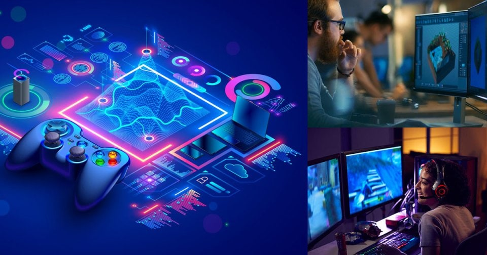

Juegos de acción: Son juegos que requieren reflejos rápidos y una acción constante. Ejemplos incluyen juegos de disparos en primera persona (FPS) como Call of Duty o juegos de plataformas como Super Mario.
Juegos de rol (RPG): Los jugadores asumen el papel de un personaje o héroe y participan en una narrativa compleja. Ejemplos incluyen The Witcher 3 o Final Fantasy.
Juegos de aventura: Estos juegos están centrados en la exploración y la resolución de rompecabezas. Ejemplos famosos son The Legend of Zelda o Uncharted.
Juegos de estrategia: Se enfocan en la toma de decisiones tácticas y estratégicas, como StarCraft o Civilization.
Juegos de simulación: Estos juegos tratan de emular situaciones del mundo real, como The Sims o SimCity.
El desarrollo de videojuegos es un proceso complejo que involucra múltiples disciplinas, desde la planificación inicial hasta el mantenimiento post-lanzamiento. A través de las fases de pre-producción, producción y post-producción, equipos de diseñadores, programadores y artistas crean experiencias interactivas para los jugadores. Además, las herramientas tecnológicas como motores de juego, software de diseño y lenguajes de programación son esenciales para su creación. La industria sigue evolucionando con innovaciones como la realidad virtual y la inteligencia artificial, lo que ofrece nuevas oportunidades y desafíos para los desarrolladores. En resumen, el desarrollo de videojuegos es tanto una ciencia como un arte, que combina creatividad y habilidades técnicas para crear productos que impactan el entretenimiento digital globalmente.